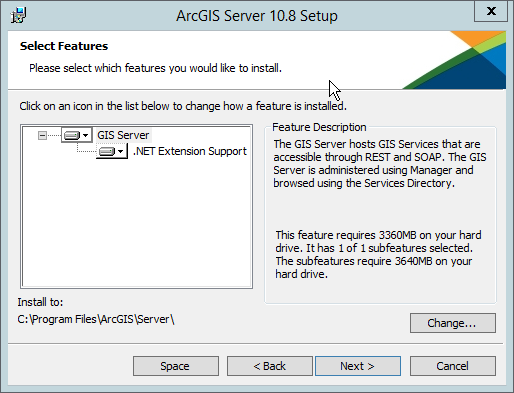
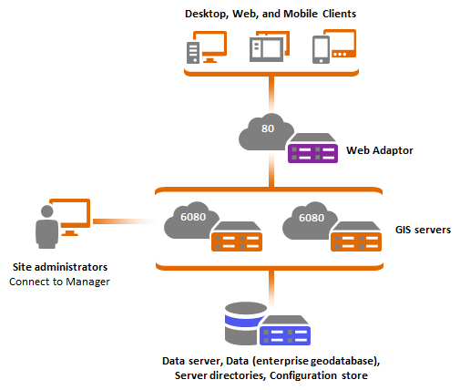
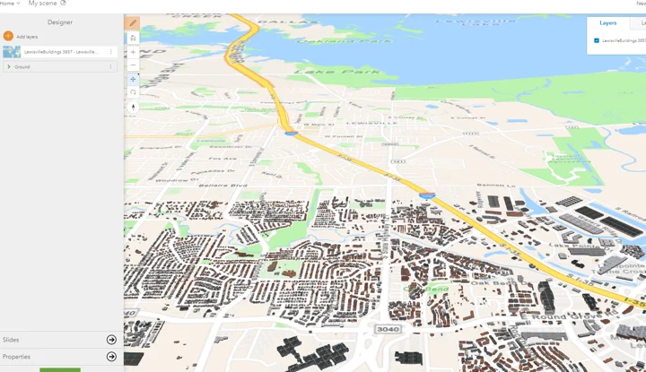
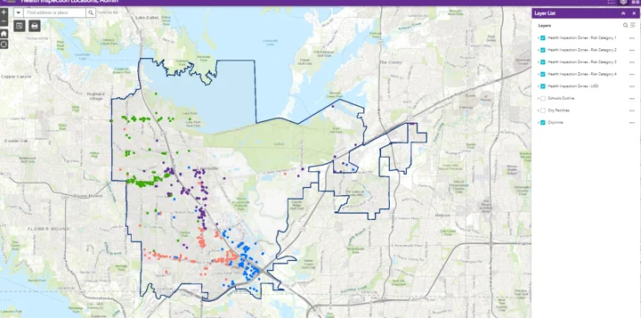
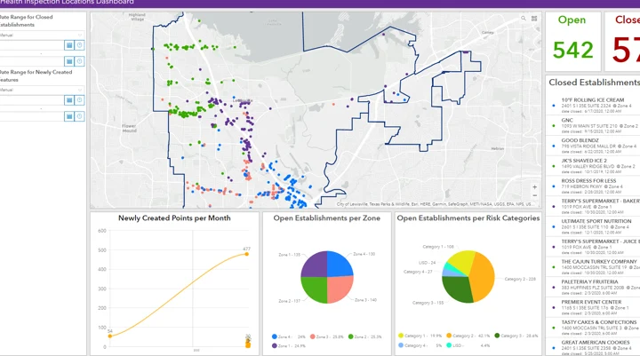
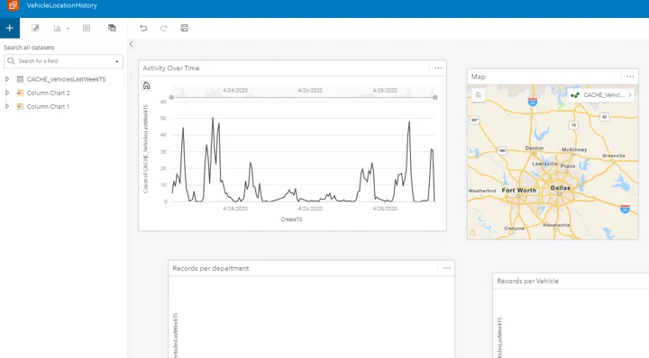
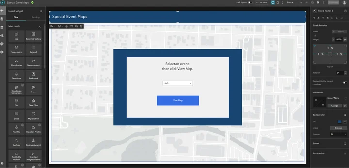

ArcGIS Enterprise and Online
Moving map services to ArcGIS Online and retiring on-premises servers.
What I did
I migrated 150+ map services with Python and ArcGIS APIs. I also created the City GIS Hub and Open Data site.
Result: Five on-premises ArcGIS servers were decommissioned, eliminating $100K in server management costs. The GIS Hub provides public access to City resources.
Tools
- ArcPy
- ArcGIS Python API
- REST APIs
- ArcGIS Online
- ArcGIS Hub
The $100K figure is not an annual savings claim; administrative settings and credentials remain private.
Project gallery
Historical portfolio screenshots. 8 images. Select an image to view it full size.
{kind=link}

{kind=link}

{kind=link}

{kind=link}

{kind=link}


{kind=link}

{kind=link}

Technical details
City of Lewisville · Software Developer - GIS
Managing many map services on local servers required ongoing maintenance.
- Automate migration with Python and ArcGIS APIs.
- Move map services to ArcGIS Online.
- Organize public datasets and maps in ArcGIS Hub.